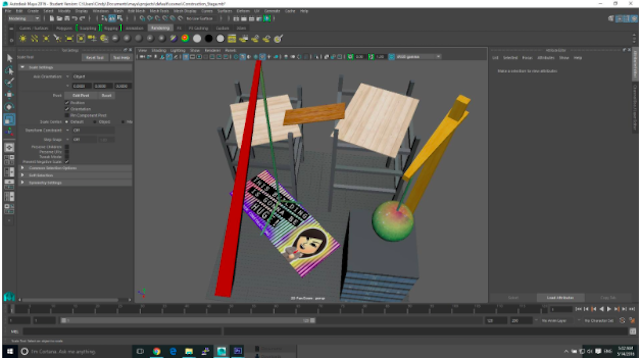
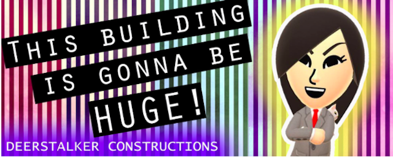
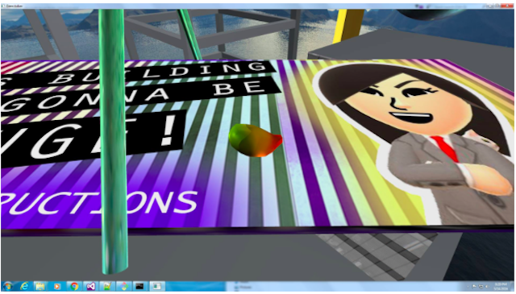

Pretty decent week for us. A lot of work was done and integration went much more smoothly this time. On the game side, we integrated shooting, item equipping, de-equipping, dynamic movement, proper jumping, and camera based movement in the game. Our code can actually be described as a video game of some sorts and we have a MVP. Next we’re going to work on more hat interactions, integrating a sound engine, combat mechanics, and getting the wrecking ball in the level swinging. We discussed more hats and what they’re supposed to do and we have good general idea on how to proceed for next week.
A shot of the skin painting process
Cool Billboard
On the Graphics side, we created the stage in Maya and applied bullet physics to it. We also worked on hat attachment on the client side. For next week, we plan to have UI text overlays to show how many lives the player has and what hat they have equipped on, as well as fixing some bugs with the lighting and the lack of bullet rigid body on some of the stage objects.
Here’s a video of our progress followed by pictures of the level design
In terms of art, our original animation did not load properly and we could not find a solution to fix it, so we are remaking the model. The original model also had few polygons so the animation looked strange. Hopefully this time around everything will look and work better. Also going to have more hat designs and animation hopefully..
Cool billboard 2